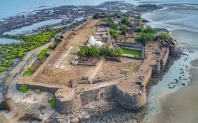
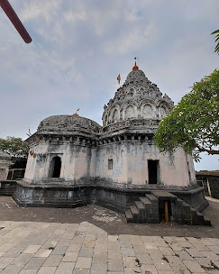
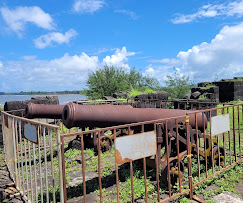

कोलाबा किल्ला
Location : Click Here For Google Map
- माहिती
- कोलाबा किल्ला महाराष्ट्र राज्याच्या रायगड जिल्ह्यात स्थित एक ऐतिहासिक किल्ला आहे. हा किल्ला अलिबाग शहराच्या जवळ वसलेला आहे आणि समुद्रात स्थित आहे. कोलाबा किल्ल्याची बांधणी १६व्या शतकात केली गेली होती. किल्ला सिद्दी सुलतानांनी बांधला होता, आणि छत्रपती शिवाजी महाराजांनी त्याला आपल्या साम्राज्यात समाविष्ट केले.
कोलाबा किल्ला समुद्रात स्थित असल्यामुळे त्याचा सामरिक महत्त्व प्रचंड आहे. किल्ल्याचे रक्षण करण्यासाठी त्याच्या कडेकडे आणि भिंतींची संरचना अत्यंत मजबूत होती. किल्ल्याच्या प्रवेश मार्गावर स्थित असलेल्या दरवाजात एक महत्त्वपूर्ण रणनीतिक रचना होती, ज्यामुळे किल्ल्याचे रक्षण करण्यास सोपे झाले.
किल्ल्याच्या शिखरावरून समुद्राचे आणि आसपासच्या परिसराचे दृश्य एक अद्भुत सौंदर्य दाखवते. किल्ल्याच्या इमारती, भिंती आणि गडांची रचना ऐतिहासिक महत्त्वाची आहे, ज्यामुळे किल्ला एक प्रमुख पर्यटन स्थळ बनला आहे.
आजकाल, कोलाबा किल्ला पर्यटकांचे आकर्षण आहे. किल्ल्याची ऐतिहासिक महत्त्व, समुद्राच्या किनाऱ्यावरील स्थान आणि स्थापत्यशास्त्र पर्यटकांना आकर्षित करतात.
Explore the historical beauty


